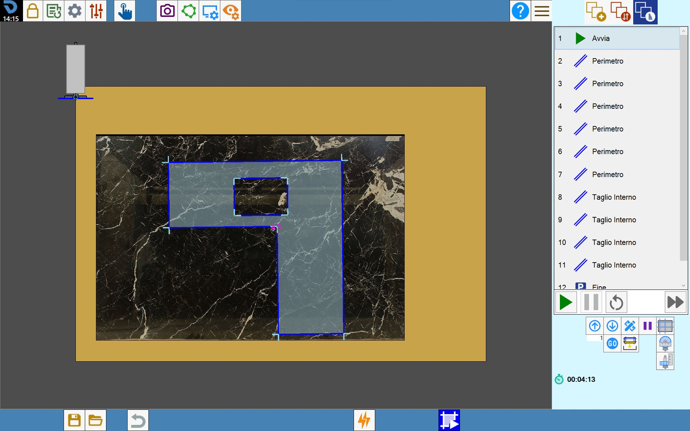

Mit dieser Funktion kann eine Simulation der am Werkstück ausgeführten Vorgänge angezeigt werden.

Schaltflächen
In der unteren Leiste des Parametrix-Bildschirms zur Schnittbearbeitung befindet sich die Schaltfläche für den Zugriff auf die Schnittsimulation.
 | Schnittsimulation |
Schnittsimulation verwalten
Die Simulation wird mit folgenden Schaltflächen gesteuert:
 | Start |
 | Pause |
 | Restart |
 | Simulationsgeschwindigkeit |
Schnittsimulation
Die Simulation beginnt mit der Maschine in Parkposition. Anschließend führt der Fräser oder die Scheibe die Schnitte gemäß der in der Warteschlange in der rechten Spalte definierten Reihenfolge aus. Nach jedem Schritt wird das abgeschlossene Element grün hervorgehoben.
In der Simulationswarteschlange können verschiedene Aktionen oder Ereignisse hinzugefügt und ihre Reihenfolge geändert werden, um die Sequenz an die spezifischen Anforderungen der Bearbeitung anzupassen und die Simulation für den vorgesehenen Zweck effektiver zu gestalten.